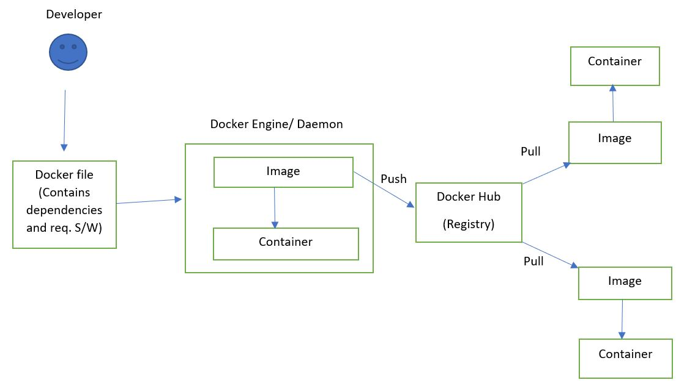

Advantage, Disadvantage, Architecture and Components of Docker
Advantage of Docker
-> No pre-allocation of RAM
-> CI Efficiency (Docker enables you to build a Container image and use that same image across every step of the deployment process.)
-> Less cost
-> It is light in weight.
-> It can run on physical H/W, virtual H/W or on cloud.
-> You can re-use the image.
-> It took very less time to create container.
Disadvantage of Docker
-> Docker is not a good solution for application that requires rich GUI.
-> Diffcult to manager large amount of Containers
-> Docker doesnot provide cross-platform compatibility means if an application is designed to run in a docker container on windows, then it can't run
on linux or vice-versa.
-> Docker is suitable when the development O.S. and testing O.S. are same. If O.S. is different, then we should use VM.
-> No solution for Data Recovery and Backup.
Docker Architecture

Containers are Layered file system. It means the steps or command will execute in sequential order as it is written in dockerfile.
Docker Ecosystem
Docker Ecosystem containes several components (set of s/w or Packages), some of them are following :-
1. Docker Daemon (Docker Server or Docker Engine) :-
-> Docker daemon runs on the host O.S.
-> It is responsible for running containers to manage docker services.
-> Docker Daemon can communicate with other daemons.
2. Docker Clinet :-
-> Docker users can interact with docker daemon through a client (CLI).
-> Docker client uses commands and Rest API to communicate with the docker daemon.
-> When a client runs any server command on the docker client terminal, the client terminal sends these docker commands to the docker daemon.
-> It is possible for the docker client to communicate with more than one daemon.
3. Docker Host :-
-> Docker Host is used to provide an environment to execute and run applications. It contains the docker daemon, images, containers, networks and
storages.
4. Docker Hub (Registry) :-
-> Docker registry manages and stores the docker images.
-> There are two types of registries in the docker -
i) Public Registry - Public Registry is also called as docker hub.
ii) Private Registry - It is used to share images within the enterprise.
5. Docker Images :-
-> Docker Images are read only binary templates used to create docker containers.
-> Or, Single file with all dependencies and configuration required to run a container.
-> There are three ways to get an Image -
i) Take image from docker hub
ii) Create image from docker file
iii) Create image from existing docker Containers.
6. Docker Container :-
-> Container holds the entire packages that is needed to run the application.
-> Or, in other words, we can say that, the image is a template and the container is the run time copy of that template.
-> Container is like a Virtual Machine.
-> Images becomes container when they run on docker engine.
-> You can make modifications in containers, but not in the images as it is read only binary templates.
7. Docker Compose